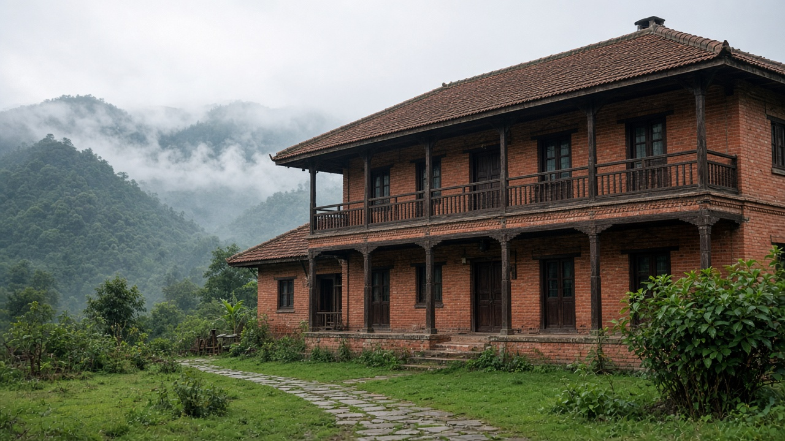
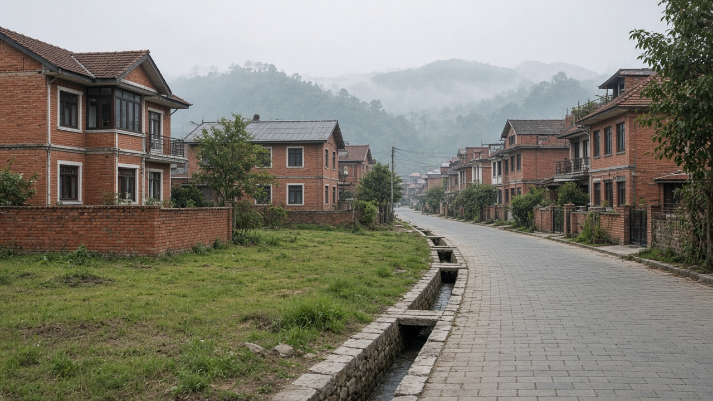
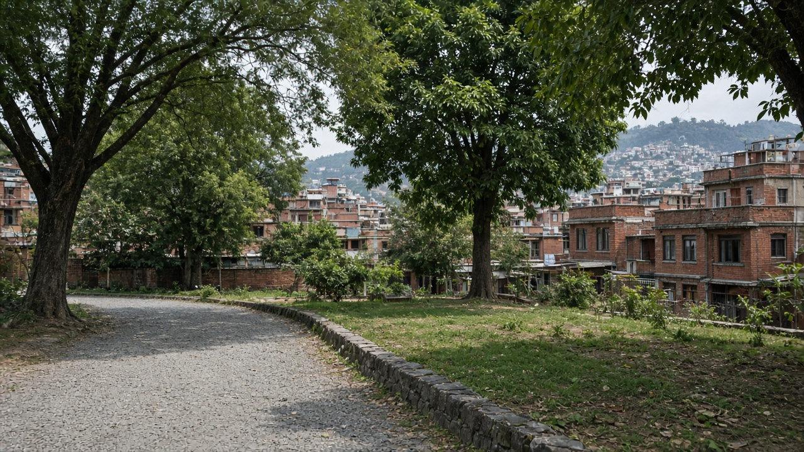

Urban Governance and Municipal Finance
Published on August 20, 2026

Sustainable streets and housing fail when municipalities lack the authority, staff, and money to implement plans. Urban governance is the everyday work of elected councils, ward offices, utilities, and courts that decide whose building gets a permit, whose lane is paved, and whose complaint is heard. After Nepal’s federal restructuring, local governments gained planning powers, yet many still depend on grants and struggle to hire planners, engineers, and revenue staff. Transparent cadastres, participatory budgeting, and published procurement reduce patronage that otherwise steers investment to a few visible roads. Metropolitan coordination across Kathmandu Valley’s multiple municipalities is essential because air, traffic, and rivers ignore administrative lines.
Municipal finance rests on property tax, business fees, user charges, land-value capture, and intergovernmental transfers. Undervalued land records and weak collection leave cities unable to maintain drains or hire building inspectors. Fair property tax, with exemptions for the poorest and enforcement on vacant plots, can fund local services without chasing only donor projects. Borrowing for long-life assets is reasonable if repayment is tied to growth in the tax base and if citizens can see the accounts. Informal economies need simple, predictable fees rather than raids. When finance is unpredictable, mayors choose short ribbon-cuttings over twenty-year network upgrades.
Capacity is as scarce as cash. Training for ward chairs, digital permit systems, and shared technical pools among small municipalities stretch limited expertise. Oversight by auditor offices and active citizen forums keeps budgets honest. Emerging hill and Terai municipalities should set revenue systems early, before sprawl outruns the tax net. Success is measured in own-source revenue share, permit processing time, audit follow-up, and whether services reach rental neighbourhoods as well as owner-occupied cores. Good urban governance makes compactness, transit, and parks possible; without it, plans remain posters on an office wall.

दिगो सडक र आवास असफल हुन्छन् जब नगरपालिकासँग योजना लागू गर्ने अधिकार, कर्मचारी र पैसा हुँदैन। सहरी शासन निर्वाचित परिषद्, वडा कार्यालय, उपयोगिता र अदालतको दैनिक काम हो जसले कसको भवनले अनुमति पाउँछ, कसको गल्ली पिच हुन्छ र कसको गुनासो सुनिन्छ भन्ने तय गर्छ। नेपालको संघीय पुनर्संरचनापछि स्थानीय सरकारले योजना अधिकार पाए, तैपनि धेरै अनुदानमा निर्भर छन् र योजनाकार, इन्जिनियर र राजस्व कर्मचारी भर्ना गर्न संघर्ष गर्छन्। पारदर्शी कित्ता अभिलेख, सहभागी बजेट र प्रकाशित खरिदले पक्षपात घटाउँछ जसले अन्यथा लगानी केही देखिने सडकतिर मोड्छ। काठमाडौं उपत्यकाका धेरै नगरबीच महानगरीय समन्वय आवश्यक छ किनकि हावा, ट्राफिक र नदीले प्रशासनिक रेखा मान्दैनन्।
नगर वित्त सम्पत्ति कर, व्यापार शुल्क, प्रयोगकर्ता महसुल, भूमि मूल्य समात्ने र अन्तरसरकारी हस्तान्तरणमा टिक्छ। कम मूल्याङ्कन भएका जग्गा अभिलेख र कमजोर संकलनले शहरलाई नाला मर्मत वा भवन निरीक्षक राख्न असमर्थ बनाउँछ। गरिबका लागि छुट र खाली प्लटमा कार्यान्वयनसहितको न्यायोचित सम्पत्ति करले केवल दाता आयोजना पिछा नगरी स्थानीय सेवा कोष गर्न सक्छ। लामो आयुका सम्पत्तिको ऋण उचित हुन्छ यदि तिर्ने कर आधार वृद्धिसँग जोडिन्छ र नागरिकले खाता देख्न सक्छन्। अनौपचारिक अर्थतन्त्रलाई छापा होइन सरल, अनुमानयोग्य शुल्क चाहिन्छ। वित्त अनिश्चित हुँदा मेयरले बीस वर्षका सञ्जाल सुधारभन्दा छोटा उद्घाटन छान्छन्।
क्षमता नगद जत्तिकै दुर्लभ छ। वडा अध्यक्ष तालिम, डिजिटल अनुमति प्रणाली र साना नगरबीच साझा प्राविधिक समूहले सीमित विशेषज्ञता तन्काउँछन्। लेखापरीक्षण कार्यालय र सक्रिय नागरिक मञ्चले बजेट इमानदार राख्छन्। उदाउँदो पहाडी र तराई नगरले फैलावट कर जाल नाघ्नुअघि राजस्व प्रणाली चाँडै राख्नुपर्छ। सफलता आफ्नै स्रोत राजस्व हिस्सा, अनुमति प्रक्रिया समय, लेखापरीक्षण पछ्याइ र भाडा छिमेकले मालिक-बसोबास केन्द्रसरह सेवा पाउँछन् कि भन्नेमा मापिन्छ। राम्रो सहरी शासनले सघनता, पारगमन र पार्क सम्भव बनाउँछ; बिना यसका योजना कार्यालय भित्ताका पोस्टर रहन्छन्।

टिकाऊ सड़कें और आवास असफल होते हैं जब नगरपालिकाओं के पास योजना लागू करने का अधिकार, कर्मचारी और धन न हो। शहरी शासन निर्वाचित परिषद, वार्ड कार्यालय, उपयोगिता और अदालतों का दैनिक काम है जो तय करता है किसकी इमारत अनुमति पाए, किसकी गली पक्की हो और किसकी शिकायत सुनी जाए। नेपाल के संघीय पुनर्संरचना बाद स्थानीय सरकारों को योजना अधिकार मिले, फिर भी कई अनुदान पर निर्भर हैं और योजनाकार, इंजीनियर तथा राजस्व कर्मचारी भरती में संघर्ष करती हैं। पारदर्शी कित्ता अभिलेख, भागीदार बजट और प्रकाशित खरीद पक्षपात घटाते हैं जो अन्यथा निवेश कुछ दिखती सड़कों की ओर मोड़ता है। काठमांडू घाटी की कई नगरपालिकाओं के बीच महानगरीय समन्वय आवश्यक है क्योंकि हवा, ट्रैफ़िक और नदी प्रशासनिक रेखा नहीं मानते।
नगर वित्त संपत्ति कर, व्यापार शुल्क, उपयोगकर्ता महसूल, भूमि मूल्य पकड़ और अंतरसरकारी हस्तांतरण पर टिकता है। कम मूल्यांकित भूमि अभिलेख और कमज़ोर संग्रह शहरों को नाली मरम्मत या भवन निरीक्षक रखने में असमर्थ बनाते हैं। गरीबों के लिए छूट और खाली प्लॉट पर प्रवर्तन सहित न्यायसंगत संपत्ति कर केवल दाता परियोजनाएँ पीछा किए बिना स्थानीय सेवा कोष कर सकता है। लंबी आयु संपत्ति का ऋण उचित है यदि चुकौती कर आधार वृद्धि से जुड़ी हो और नागरिक खाते देख सकें। अनौपचारिक अर्थव्यवस्था को छापे नहीं सरल, अनुमानयोग्य शुल्क चाहिए। वित्त अनिश्चित हो तो मेयर बीस वर्ष के नेटवर्क सुधार के बजाय छोटे उद्घाटन चुनते हैं।
क्षमता नकदी जितनी ही दुर्लभ है। वार्ड अध्यक्ष प्रशिक्षण, डिजिटल अनुमति प्रणाली और छोटे नगरों के बीच साझा तकनीकी समूह सीमित विशेषज्ञता फैलाते हैं। लेखापरीक्षा कार्यालय और सक्रिय नागरिक मंच बजट ईमानदार रखते हैं। उभरती पहाड़ी और तराई नगरपालिकाओं को फैलाव कर जाल पार करने से पहले राजस्व प्रणाली जल्दी रखनी चाहिए। सफलता अपने स्रोत राजस्व हिस्सेदारी, अनुमति प्रक्रिया समय, लेखापरीक्षा पीछा और इस बात में मापी जाती है कि किराया मोहल्ले मालिक-निवास केंद्र जितनी सेवा पाते हैं या नहीं। अच्छा शहरी शासन सघनता, पारगमन और पार्क संभव बनाता है; इसके बिना योजनाएँ कार्यालय दीवार के पोस्टर रह जाती हैं।